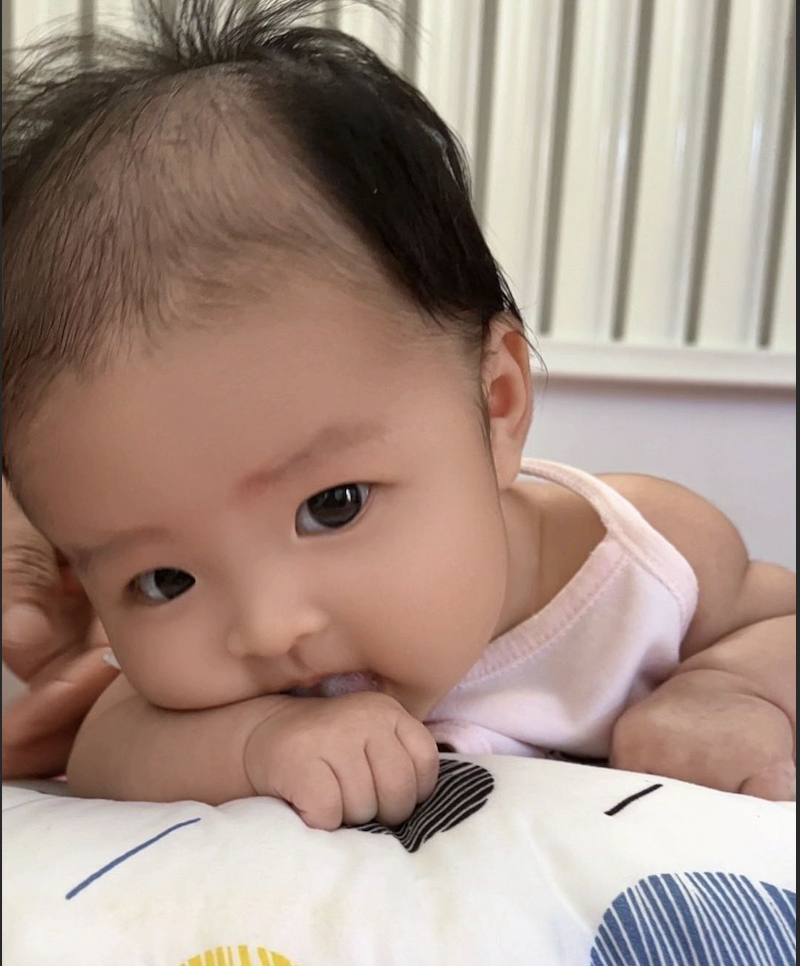

我的小宝贝👶

愿我的宝贝健康快乐成长，
每一天都充满阳光和欢笑✨
哈哈，亲戚的媳妇，转眼间，2025年已经划上了句号，这一年，我们俩，经历幸福：我们把妞妞照顾的很好，妞妞转适度奶粉成功，不再喝臭臭的奶粉；经历辛苦：妞妞生病时，一趟趟的跑医院，平时彻夜不眠的守护；
仍然记得刚怀孕时，媳妇小心翼翼的样子，每次产检，听到小家伙在肚子给你的反馈，你眼睛里闪着的光；10个月的怀孕，媳妇经历了皮肤变差，夜晚睡不着，剧烈的呕吐；终于在2024年6月1日，媳妇变成了一个无所不能的妈妈，那天，我看着从手术室出来的疲惫的你，依然记得咱们俩刚认识的时候，那个在杭州开心大笑的你；我心里在想：我一定要好好爱你，爱护你和我们的闺女；
媳妇，辛苦了，多少个夜晚，是你顶着劳累，在妞妞的哭声中醒来，温柔的哄着闺女；因为妞妞过敏，你开始研究过敏，买了许多书籍，看了多少的视频，一个不爱看书的你，生生的每天去看书，去研究如何让闺女脱敏；光笔记就记了很多本，每天吃什么，安排的井井有条；
媳妇，真的辛苦了，这一年，你每天都在做饭，每次做好几个菜，你说，闺女吃的东西要讲究，不能吃哪些有炎症的，还要营养均衡，你每天都在厨房去忙，自己的手都开始变得粗糙，我心里一直很愧疚，不能多替你分担，让你少一点劳累，多一些休息；
我从来没想过，让你既看孩子，又要挣钱；你开始做抖音，很多宝妈找你咨询，群里的消息很多，本来你的休息时间就不多，我不想让你太劳累，和你有了一些冲突和别扭，但是后来我知道了，你不只是为了挣钱，也是在和宝妈的聊天中，获得了好多认可；每次你和我分享，有宝宝在你的指导下恢复了正常，你当时是那么的开心，我便想通也理解了，我开始支持你；
2025年，我有时候会想的很多，有时候很焦虑，我并不是一个优秀的人，收入也不是很高，是你一直在鼓励我，无条件的支持我，你的支持是我最大的后路，有你，我觉得自己很优秀；
今冬借，明冬还，月月年年不分开，当2026年的阳光亲吻我们的脸庞，狂风吹刮我们的橡树，我的心永远和你一起跳动，我们一定会一直在一起。